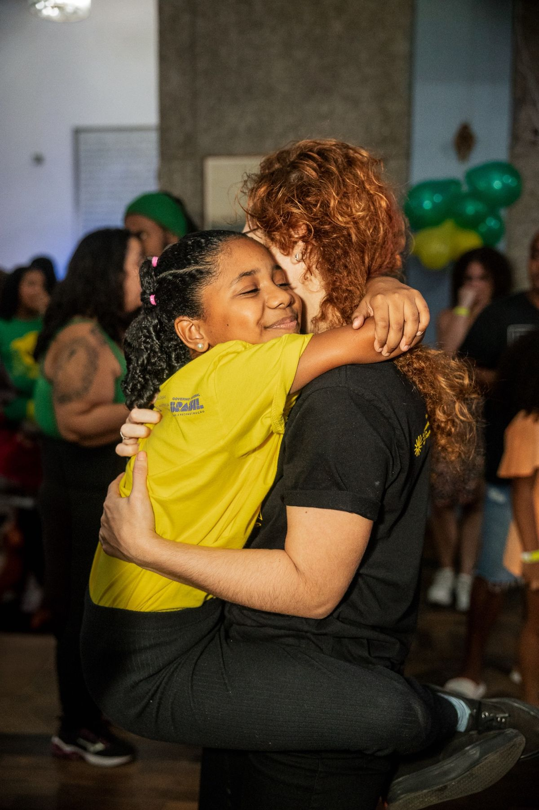
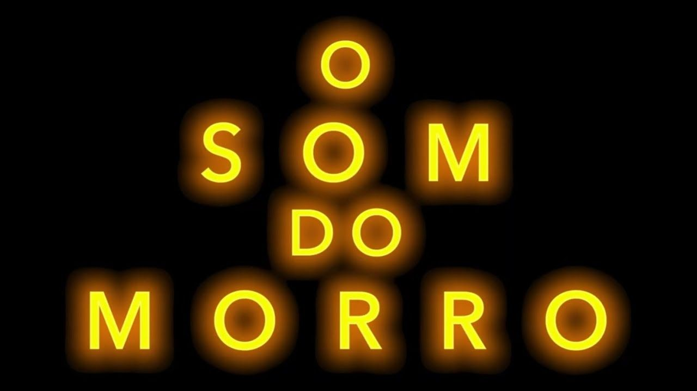
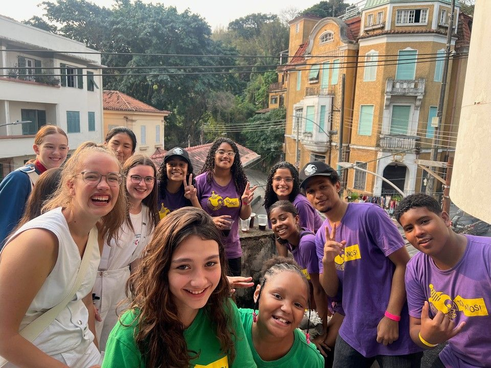
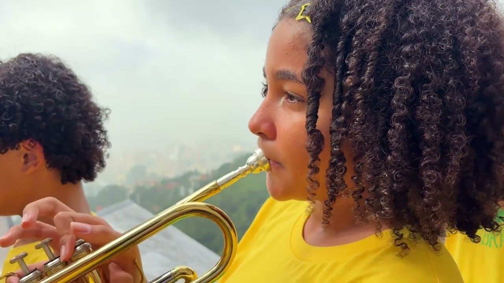

Sobre nós · desde 2014 About us · since 2014Über uns · seit 2014
Desde 2014, a Favela Brass ensina instrumentos de sopro e percussão gratuitamente para jovens das favelas e escolas públicas do Rio de Janeiro. Hoje são 197 alunos, mais de 250 instrumentos e mais de 50 apresentações por ano. Since 2014, Favela Brass has taught brass and percussion free of charge to young people from Rio de Janeiro's favelas and public schools. Today that means 197 students, more than 250 instruments and more than 50 performances a year.Seit 2014 bringt Favela Brass jungen Menschen aus den Favelas und öffentlichen Schulen Rio de Janeiros kostenlos Blechblasinstrumente und Percussion bei. Heute sind das 197 Schülerinnen und Schüler, über 250 Instrumente und mehr als 50 Auftritte pro Jahr.
Nossa MissãoOur MissionUnsere Mission
Promover a inclusão cultural e transformação social através de um programa gratuito de educação musical para jovens nas favelas e escolas públicas do Rio de Janeiro. Promote cultural inclusion and social transformation through a free music education programme for young people in Rio de Janeiro's favelas and public schools.Kulturelle Teilhabe und sozialen Wandel fördern, durch ein kostenloses Musikbildungsprogramm für junge Menschen in den Favelas und öffentlichen Schulen Rio de Janeiros.
Nossa VisãoOur VisionUnsere Vision
Um Rio de Janeiro onde todas as crianças têm a oportunidade de aprender instrumentos de sopro e percussão, oferecendo sua contribuição à cultura musical popular da cidade. A Rio de Janeiro where every child has the opportunity to learn brass and percussion instruments, contributing to the city's popular music culture.Ein Rio de Janeiro, in dem jedes Kind die Möglichkeit hat, Blechblas- und Percussion-Instrumente zu lernen und so seinen Beitrag zur populären Musikkultur der Stadt zu leisten.
Três escolhas que definem como ensinamos música há doze anos. Three choices that have shaped how we teach music for twelve years.Drei Entscheidungen, die seit zwölf Jahren prägen, wie wir Musik unterrichten.
Programa próprio dividido em 8 níveis, seguido por todos os alunos e disponibilizado online, com avaliação externa e certificação internacional. Prepara os alunos para as provas práticas de faculdades de música. Our own programme divided into 8 levels, followed by all students and available online, with external assessment and international certification. It prepares students for university music entrance exams.Ein eigenes Programm in 8 Stufen, das alle Schülerinnen und Schüler durchlaufen und das online verfügbar ist, mit externer Prüfung und internationaler Zertifizierung. Es bereitet auf die praktischen Aufnahmeprüfungen der Musikhochschulen vor.
Do funk carioca ao jazz de Nova Orleans: os alunos tocam a música dos blocos e fanfarras do Rio ao lado de temas e ritmos do mundo. From carioca funk to New Orleans jazz: students play the music of Rio's blocos and street bands alongside themes and rhythms from around the world.Vom Carioca-Funk bis zum Jazz aus New Orleans: Die Schülerinnen und Schüler spielen die Musik der Blocos und Blaskapellen Rios, Seite an Seite mit Melodien und Rhythmen aus aller Welt.
O aluno pode começar na escola ou na Pereira da Silva, avançar nas turmas de sábado no Curvelo e chegar ao curso avançado e às bandas. Um caminho contínuo dos 7 aos 17 anos. A student can start at school or in Pereira da Silva, move up through the Saturday classes at the Curvelo and reach the advanced course and the bands. One continuous path from age 7 to 17.Ein Kind kann in der Schule oder in Pereira da Silva anfangen, über die Samstagskurse im Curvelo aufsteigen und schließlich den Fortgeschrittenenkurs und die Bands erreichen. Ein durchgängiger Weg vom 7. bis zum 17. Lebensjahr.
Doze anos de música, contados ano a ano. Twelve years of music, told year by year.Zwölf Jahre Musik, Jahr für Jahr erzählt.
Oficinas de música começam na comunidade Pereira da Silva, em Laranjeiras, na casa do fundador Tom Ashe, trompetista britânico. Quatro crianças participam das primeiras aulas. Music workshops begin in the Pereira da Silva community in Laranjeiras, at the home of founder Tom Ashe, a British trumpet player. Four children take part in the first classes.In der Comunidade Pereira da Silva in Laranjeiras beginnen Musikworkshops im Haus des Gründers Tom Ashe, eines britischen Trompeters. Vier Kinder nehmen an den ersten Stunden teil.
O projeto chega a 36 jovens das comunidades Pereira da Silva, Fallet, Fogueteiro e Morro dos Prazeres, com aulas dadas por amigos do projeto, professores remunerados e voluntários. The project grows to 36 young people from the Pereira da Silva, Fallet, Fogueteiro and Morro dos Prazeres communities, taught by friends, paid teachers and volunteers.Das Projekt wächst auf 36 junge Menschen aus den Comunidades Pereira da Silva, Fallet, Fogueteiro und Morro dos Prazeres, unterrichtet von Freunden des Projekts, bezahlten Lehrkräften und Freiwilligen.
Lançamento do projeto "Favela Brass nas Escolas", com aulas de iniciação musical em 4 escolas municipais. Cerca de 150 crianças atendidas. Launch of the "Favela Brass in Schools" project, with introductory music classes in 4 municipal schools. Around 150 children reached.Start des Projekts "Favela Brass nas Escolas" mit musikalischem Anfangsunterricht an 4 städtischen Schulen. Rund 150 Kinder werden erreicht.
A pandemia força a adaptação ao ensino online. O projeto se formaliza como Associação Musical Favela Brass e lança o currículo online. The pandemic forces a move to online teaching. The project is formalised as Associação Musical Favela Brass and the online curriculum launches.Die Pandemie erzwingt den Wechsel zum Online-Unterricht. Das Projekt wird als Associação Musical Favela Brass formalisiert, und der Online-Lehrplan geht an den Start.
Retorno híbrido, combinando aulas online e presenciais. Conquista da PetroRio como patrocinadora para 2022. A hybrid return, combining online and in-person classes. PetroRio secured as sponsor for 2022.Hybride Rückkehr mit einer Kombination aus Online- und Präsenzunterricht. PetroRio wird als Sponsor für 2022 gewonnen.
Com o primeiro projeto aprovado pela Lei Rouanet (Lei Federal de Incentivo à Cultura) e o patrocínio da PRIO, 284 alunos são beneficiados em 6 escolas públicas. A banda estreia no Bourbon Festival Paraty e o Baile Brass mensal é lançado. With the first project approved under the Lei Rouanet (Brazil's Federal Culture Incentive Law) and PRIO's sponsorship, 284 students are reached across 6 public schools. The band debuts at Bourbon Festival Paraty and the monthly Baile Brass launches.Mit dem ersten Projekt, das nach dem brasilianischen Kulturförderungsgesetz (Lei Rouanet) bewilligt wurde, und dem Sponsoring von PRIO werden 284 Schülerinnen und Schüler an 6 öffentlichen Schulen erreicht. Die Band debütiert beim Bourbon Festival Paraty, und der monatliche Baile Brass startet.
O patrocínio da PRIO via Lei Rouanet quase quadruplica, e o projeto se profissionaliza: a equipe cresce e a base educacional é fortalecida. PRIO's sponsorship via the Lei Rouanet nearly quadruples, and the project professionalises: the team grows and the educational foundations are strengthened.Das Sponsoring von PRIO über die Lei Rouanet vervierfacht sich nahezu, und das Projekt professionalisiert sich: Das Team wächst, und das pädagogische Fundament wird gestärkt.
O projeto comemora 10 anos no Circo Voador, com 1.115 pessoas, e é destaque em matéria da TV Globo. Alunos tocam no Prêmio da Música Brasileira, no Theatro Municipal. Primeiro intercâmbio internacional: o Jugendmusikkorps de Bad Kissingen, da Alemanha, visita o Rio e desfila com a Favela Brass por Santa Teresa. The project celebrates its 10th anniversary at Circo Voador with 1,115 people, and is featured on TV Globo. Students perform at the Brazilian Music Awards at the Theatro Municipal. First international exchange: the Jugendmusikkorps of Bad Kissingen, Germany, visits Rio and parades with Favela Brass through Santa Teresa.Das Projekt feiert sein zehnjähriges Bestehen im Circo Voador mit 1.115 Gästen und wird in einem Beitrag von TV Globo vorgestellt. Schülerinnen und Schüler treten beim Prêmio da Música Brasileira im Theatro Municipal auf. Erster internationaler Austausch: Das Jugendmusikkorps aus Bad Kissingen besucht Rio und zieht gemeinsam mit Favela Brass durch Santa Teresa.
O ano fecha com 203 alunos ativos, 63 apresentações e 810 aulas realizadas, com 96% de aprovação nas provas práticas. A banda se apresenta no Copacabana Palace e o documentário "O Som do Morro" é exibido no Festival do Rio. The year closes with 203 active students, 63 performances and 810 classes delivered, with a 96% pass rate in practical exams. The band performs at the Copacabana Palace and the documentary "O Som do Morro" screens at the Rio Film Festival.Das Jahr schließt mit 203 aktiven Schülerinnen und Schülern, 63 Auftritten und 810 erteilten Unterrichtsstunden, bei einer Bestehensquote von 96 % in den praktischen Prüfungen. Die Band tritt im Copacabana Palace auf, und der Dokumentarfilm "O Som do Morro" wird beim Festival do Rio gezeigt.
197 alunos ativos, 5 escolas municipais parceiras, mais de 250 instrumentos no acervo e um calendário com mais de 50 apresentações. O intercâmbio com Bad Kissingen segue vivo, e a história continua. 197 active students, 5 partner municipal schools, more than 250 instruments and a calendar with more than 50 performances. The Bad Kissingen exchange is alive and well, and the story continues.197 aktive Schülerinnen und Schüler, 5 städtische Partnerschulen, über 250 Instrumente im Bestand und ein Kalender mit mehr als 50 Auftritten. Der Austausch mit Bad Kissingen ist lebendig wie eh und je, und die Geschichte geht weiter.
A maioria dos nossos alunos mora em favelas do Rio, e quase 60% dos alunos do curso avançado são meninas. Most of our students live in Rio's favelas, and almost 60% of advanced course students are girls.Die meisten unserer Schülerinnen und Schüler leben in den Favelas Rios, und fast 60 % der Teilnehmenden im Fortgeschrittenenkurs sind Mädchen.

O que acontece quando o programa funciona de ponta a ponta. What happens when the programme works from end to end.Was passiert, wenn das Programm von Anfang bis Ende funktioniert.
Nas provas práticas de certificação internacional, 78% dos nossos alunos são aprovados com distinção, a nota máxima. In international practical certification exams, 78% of our students pass with distinction, the highest grade.In den praktischen Prüfungen zur internationalen Zertifizierung bestehen 78 % unserer Schülerinnen und Schüler mit Auszeichnung, der höchsten Note.
Quatro ex-alunos do projeto hoje dão aula na Favela Brass, ensinando as novas gerações nos mesmos espaços onde aprenderam. Four former students of the project now teach at Favela Brass, passing the music on in the same spaces where they learned.Vier ehemalige Schüler des Projekts unterrichten heute selbst bei Favela Brass und geben die Musik an die nächste Generation weiter, in denselben Räumen, in denen sie einst gelernt haben.
Ex-alunos do projeto hoje têm sua própria banda profissional, que se apresenta em casamentos, festivais e eventos corporativos pelo Rio. Former students now run their own professional band, performing at weddings, festivals and corporate events across Rio.Ehemalige Schüler des Projekts haben heute ihre eigene professionelle Band, die auf Hochzeiten, Festivals und Firmenveranstaltungen in ganz Rio auftritt.
Do carnaval de rua aos palcos mais tradicionais do Rio. From street carnival to Rio's most traditional stages.Vom Straßenkarneval bis zu den traditionsreichsten Bühnen Rios.
A história e o som da Favela Brass, contados em vídeo. The story and the sound of Favela Brass, on film.Die Geschichte und der Klang von Favela Brass, erzählt in Videos.

Em um mosaico de música ao vivo e entrevistas, o filme conta a história da Favela Brass: dez anos de imagens que culminam em uma celebração no Circo Voador, com uma grande batalha das bandas e apresentações inesquecíveis dos alunos. Exibido no Festival do Rio em 2025. In a vibrant collage of live music and interviews, the film tells the story of Favela Brass: ten years of footage culminating in a celebration at Circo Voador, with a huge battle of the bands and unforgettable performances from the students. Screened at the Rio Film Festival in 2025.In einem Mosaik aus Livemusik und Interviews erzählt der Film die Geschichte von Favela Brass: zehn Jahre Aufnahmen, die in einer Feier im Circo Voador gipfeln, mit einer großen Battle der Bands und unvergesslichen Auftritten der Schülerinnen und Schüler. Gezeigt beim Festival do Rio 2025.

O encontro de 2024 em cinco minutos: a banda alemã no Rio, do ensaio aberto no Coreto Modernista ao desfile conjunto por Santa Teresa. The 2024 encounter in five minutes: the German band in Rio, from the open rehearsal at the Coreto Modernista to the joint parade through Santa Teresa.Die Begegnung von 2024 in fünf Minuten: die deutsche Band in Rio, von der offenen Probe am Coreto Modernista bis zum gemeinsamen Umzug durch Santa Teresa.

Coração Verde e Amarelo, o tema da Copa de 94. Como visto na GloboNews. Coração Verde e Amarelo, Brazil's 1994 World Cup anthem. As seen on GloboNews.Coração Verde e Amarelo, die WM-Hymne von 1994. Wie auf GloboNews zu sehen.
Sua contribuição mantém as aulas gratuitas e leva a música dos nossos alunos a novos palcos. Colabore como doador, patrocinador ou voluntário. Your contribution keeps the classes free and takes our students' music to new stages. Get involved as a donor, sponsor, or volunteer.Ihr Beitrag hält den Unterricht kostenlos und bringt die Musik unserer Schülerinnen und Schüler auf neue Bühnen. Unterstützen Sie uns als Spender, Sponsor oder Freiwilliger.
Empresas e pessoas físicas podem apoiar via Lei Rouanet, com 100% de dedução fiscal · PRONAC 254750 Companies and individuals can support via the Lei Rouanet, with a 100% tax deduction · PRONAC 254750Unternehmen und Privatpersonen können uns über das brasilianische Kulturförderungsgesetz (Lei Rouanet) mit 100 % Steuerabzug unterstützen · PRONAC 254750
Um boletim por mês com o melhor da banda. Cancele quando quiser.One newsletter a month with the best of the band. Unsubscribe any time.Ein Newsletter pro Monat mit dem Besten der Band. Jederzeit abbestellbar.
Projeto aprovado pela Lei Federal de Incentivo à Cultura · PRONAC 254750 Approved under Brazil's Federal Culture Incentive Law · PRONAC 254750Projekt bewilligt nach dem brasilianischen Kulturförderungsgesetz · PRONAC 254750